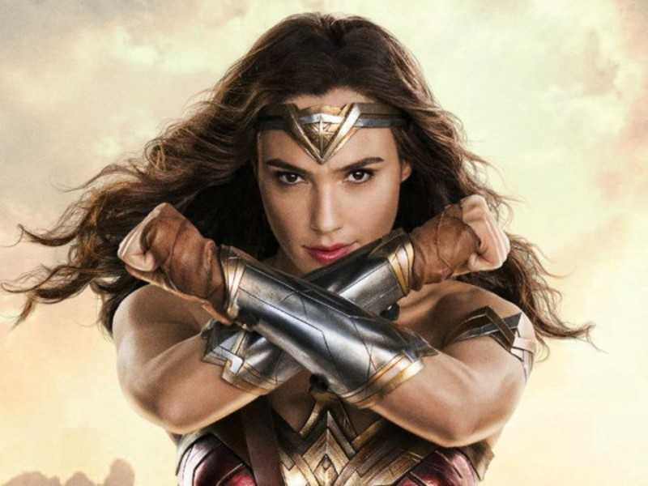
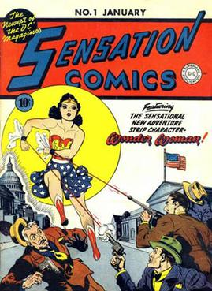

WONDER WOMAN is a 2017 American superhero film based on
the DC comics character of the same name produced by DC Entertainment in association with RatPac Entertainment and Chinese company Tencent Pictures, and distributed by Warner Bros. Pictures. It is the
fourth installment in the DC Extended Universe (DCEU).
Directed by Patty Jenkins from a screenplay by Allen Heinberg and a story by heinberg.
Wonder Woman stars Gal Gadot in the title role. alongside Chris Pine, Robin Wright, Danny Hutson, David Thewlis, Connie Nielsen, and Elena Anaya. Development of a live action Wonder Woman film began in 1996, with Ivan Reitman slated to produce and possibly direct. The project floundered in development hell for many years; Jon Cohen, Todd Alcott, and Joss Whedon, among others, were also attached to the project at various points.
Warner Bros. announced the film in 2010 and Jenkins signed on to direct in 2015.
GAL GADOT
GAL GADOT VARSANO is an Israeli actress and model. At the age of 18, she was crowned by Miss Israel 2004.
She then served two years in the Israel Defence Forces as a combat instructer, and began studying law and International relations at IDC HERZLIYA college while building up her model and acting careers.
GADOT's first International film role came as a Gisele Yashar in Fast & Furious (2009) a role she reprised in subsequent installment of the film franchise. She went on to earn Worldwide fame
for portraying WONDER WOMAN in the DC extended Universe, beginning withBATMAN V SUPERMAN: DAWN OF JUSTICE(2016)followed by the sollow film 'wonder woman' and the ensemble 'JUSTICE lEAGUE'(both 2017).
Gadot was included on Time's annual list of the 100 most influencial people in the world in 2018 and was listing among the highest paid actresses among the world.
Here is a small interview video of the "WONDER WOMAN"

Wonder Woman is a superhero appearing in American comic books published by DC Comics. The character is a founding member of the Justice League. The character first appeared in All Star Comics 8 in October 1941 with her first feature in Sensation Comics 1, January 1942.
The Wonder Woman title has been published by DC Comics almost continuously except for a brief hiatus in 1986. In her homeland, the island nation of Themyscira, her official title is Princess Diana of Themyscira, Daughter of Hippolyta. She has no father, she was created by Zeus, which makes her a demigod. When blending into the society outside of her homeland, she adopts her civilian identity Diana Prince.
The movie is intended to be the fourth installment in the DC Extended Universe. The movie is directed by Patty Jenkins, written by Allan Heinberg, Geoff Johns and Patty Jenkins,
and from a story by Heinberg and Zack Snyder. Principal photography began in late November 2015 and wrapped in May 2016. Wonder Woman was released on June 2, 2017 in the United States, in 2D, 3D and IMAX 3D.
History..

Wonder Woman was introduced in All Star Comics (December 1941), during the era known to comics historians as the "Golden Age of Comic Books". Following this debut,
she was featured in Sensation Comics (January 1942), and six months later appeared in her own comic book series (Summer 1942). Wonder Woman took her place beside the extant
superheroines or antiheroes Fantomah,[5] Black Widow, Invisible Scarlet O'Neil, and Canada's Nelvana of the Northern Lights. Until his death in 1947, Dr. William Moulton Marston was credited
with writing all of the Wonder Woman stories. However, later in life, he hired assistant Joye Hummel to ghostwrite stories for him. H. G. Peter penciled the book in a simplistic yet easily identifiable style.
Armed with bulletproof bracelets, a magic lasso, and Amazonian training, Wonder Woman was the archetype of Marston's perfect woman. In Wonder Woman's origin story, Steve Trevor, an intelligence officer in the
United States Army, crashed his plane on Paradise Island, the Amazons' isolated homeland. Using a "Purple Ray", Princess Diana nursed him back to health and fell in love with him.
When the goddess Aphrodite declared that it was time for an Amazon to travel to "Man's World" and fight the evil of the Nazis, a tournament was held to determine who would be the Amazon champion.
Although forbidden by her mother Queen Hippolyte to participate in the tournament, Princess Diana did so nevertheless, her identity hidden by a mask.